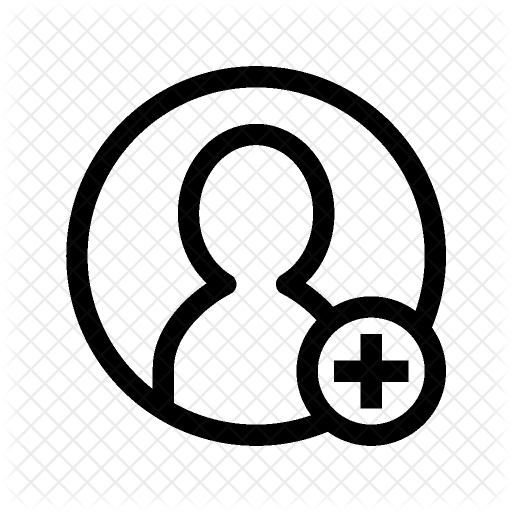

<section class="contact-app">
  <contant-filter (onFilter)="onFilterHandler($event)"></contant-filter>
  <contact-list [contacts]="contacts"> </contact-list>
  <button class="btn-add" [routerLink]="['/add']"></button>
</section>
